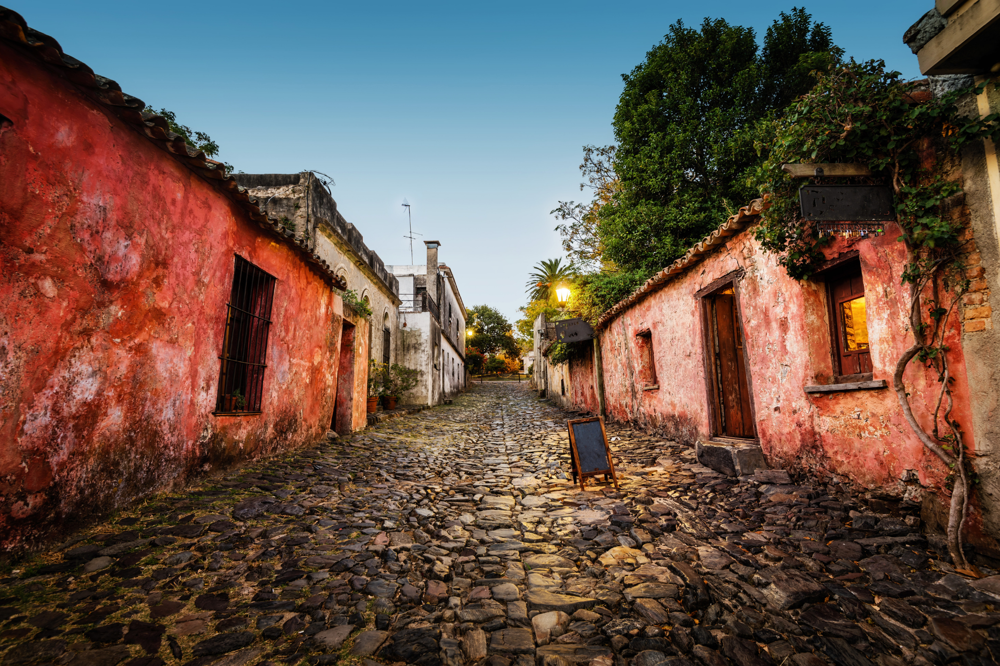

Historia
Colonia del Sacramento
Su barrio histórico, sus calles empedradas y sus construcciones coloniales forman uno de los paisajes más característicos del país.
- Ideal para: parejas y familias
- Actividades: historia, paseos y gastronomía
- Época recomendada: todo el año